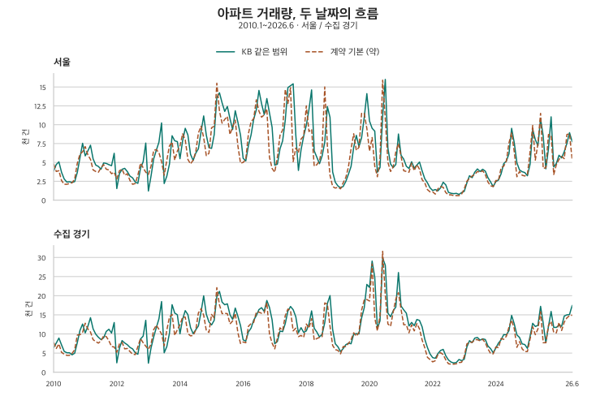
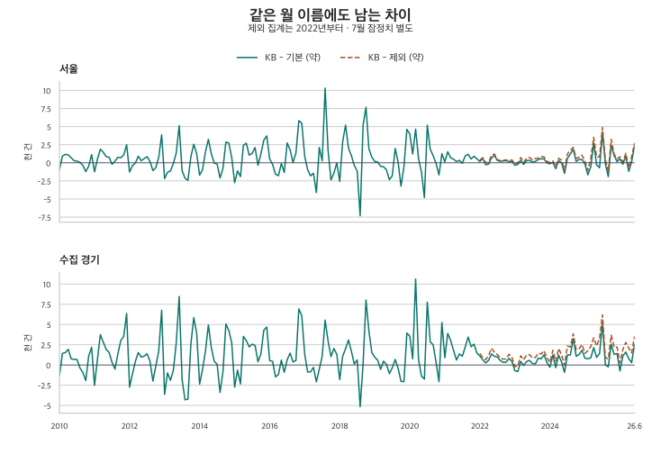

인구·주택 통계 읽기 · 출처별 거래량
KB·국토부 아파트 거래량이 다른 이유: 계약월·지역·제외 조건
서울·수집 경기의 2010~2026년 아파트 거래량을 비교합니다. 계약월과 신고월, 경기도 전체와 수집 지역, 해제·직거래 제외 조건 및 반올림을 구분해 서로 다른 거래량 기사를 읽어보세요.
분석 기간 · 2010.1~2026.7 · 7월 계약은 잠정 | 자료 기준일 · 2026-10-03 수집 · 계약 집계 2026-10-04
같은 서울 아파트 거래량인데 KB 화면과 실거래가 목록을 센 숫자가 다릅니다. 어느 쪽이 틀린 걸까요? 주택 유형뿐 아니라 거래를 어느 달에 넣는지, 어느 지역까지 세는지, 해제·직거래를 어떻게 다루는지부터 확인해야 합니다. 이 글은 2010년 1월~2026년 7월의 서울과 수집 경기 자료로 그 차이를 비교합니다.
‘주택 거래량’이라는 이름이면 모든 주택일까요?
이 글에서 사용한 KB 공공데이터는 아파트를 선택한 매매 거래량입니다. 자료 항목 이름에 ‘주택’이 들어 있다고 단독·연립까지 합친 값으로 읽지 않습니다. 국토부 쪽도 아파트 매매 자료를 사용합니다. 따라서 이 비교의 차이를 ‘주택 전체와 아파트의 차이’로 설명하면 출발부터 잘못됩니다.
| 확인 항목 | KB 공공데이터 | 국토부 자료를 센 이 글의 계약 집계 |
|---|---|---|
| 주택 유형 | 아파트 선택 · 매매 거래량 | 아파트 매매 계약 |
| 월의 의미 | 주택거래통계의 신고월 | 실거래가 자료의 계약월 |
| 서울 범위 | 서울 전체 · 25개 구 합계와 일치 | 서울 25개 구 |
| 경기 범위 | 경기도 전체와 수집 지역 소계를 각각 제시 | 수집 경기 36개 지역 |
| 포함 조건 | 제공처 공표 총계 | 기본은 해제·직거래 포함, 제외 설정은 아래에서 별도 비교 |
| 표시 단위 | 공표 건수 그대로 | 기존 공개와 같은 100건 단위 근삿값 |
국토부 FAQ는 실거래가 공개 자료의 계약일 기준과 주택거래통계의 신고일 기준을 구분합니다. 예를 들어 가상 예시로 3월 말 계약이 4월 초 신고되면 계약월 표에서는 3월, 신고월 표에서는 4월에 들어갑니다. 이 차이는 같은 거래를 서로 다른 달에 배치한 결과입니다. 단순히 전체 계열을 한 달 이동해도 모든 계약의 신고 간격이 같아지는 것은 아닙니다.
이 블로그의 기본 집계는 날짜·금액·면적이 유효한 계약을 정리해 중복을 합치고 토지임대부를 제외한 값입니다. 국토부가 공표한 공식 월별 총계 자체와 구분해야 합니다. 지분 거래 등 공개 대상의 차이, 이후 신고·해제·정정의 반영 시점도 확인할 조건입니다. 다만 이 비교에서는 두 출처의 개별 거래를 연결하지 않았으므로 원인별 기여 건수는 계산하지 않았습니다.
2010년부터 두 거래량은 얼마나 달랐을까요?
아래 그림은 서울 25개 구와 수집 경기 36개 지역에 대응하는 KB 소계를 계약월 기본 집계와 비교합니다. 주 비교는 2026년 6월까지 198개월입니다. 계약은 해제·직거래를 포함한 약 100건 단위 값이며, 최근 7월은 별도 절에서 봅니다.

서로 비슷하게 오르내리는 구간이 있어도 두 통계의 월별 수준이나 전월 대비 변화가 같다는 뜻은 아닙니다. 시점이 다른 자료를 한 달씩 맞대면 거래가 몰린 시기의 차이가 크게 보일 수 있습니다. 이를 확인하려고 차이 = KB 해당 지역 거래량 − 계약월 집계 표시값으로 계산했습니다.
| 지역 | 설정 | 비교 | 월 | KB 같은 범위 | 계약 약 | 차이 약 |
|---|---|---|---|---|---|---|
| 서울 | 기본 | 큰 양의 차이 | 2017.08 | 15,421 | 5,100 | +10,321 |
| 서울 | 기본 | 큰 음의 차이 | 2018.08 | 7,687 | 15,000 | -7,313 |
| 서울 | 기본 | 가장 작은 절댓값 | 2023.12 | 1,790 | 1,800 | -10 |
| 서울 | 제외 | 큰 양의 차이 | 2025.07 | 8,485 | 3,600 | +4,885 |
| 서울 | 제외 | 큰 음의 차이 | 2025.09 | 6,796 | 8,000 | -1,204 |
| 서울 | 제외 | 가장 작은 절댓값 | 2023.02 | 2,286 | 2,300 | -14 |
| 수집 경기 | 기본 | 큰 양의 차이 | 2020.03 | 24,815 | 14,200 | +10,615 |
| 수집 경기 | 기본 | 큰 음의 차이 | 2018.08 | 12,933 | 18,100 | -5,167 |
| 수집 경기 | 기본 | 가장 작은 절댓값 | 2025.08 | 7,699 | 7,700 | -1 |
| 수집 경기 | 제외 | 큰 양의 차이 | 2025.07 | 12,797 | 6,600 | +6,197 |
| 수집 경기 | 제외 | 큰 음의 차이 | 2023.01 | 3,388 | 3,600 | -212 |
| 수집 경기 | 제외 | 가장 작은 절댓값 | 2024.06 | 10,881 | 10,900 | -19 |
‘기본’은 2010년 1월~2026년 6월, ‘제외’는 2022년 1월~2026년 6월 안에서 각각 비교했습니다. 양수는 KB 값이 크고 음수는 계약 집계가 크다는 뜻입니다. 계약 건수는 반올림값이므로 차이 역시 약값이며, 통계의 정확성 순위가 아닙니다.
기본 설정의 서울은 2017년 8월 약 +10,321건, 2018년 8월 약 −7,313건으로 방향이 반대입니다. 수집 경기는 2020년 3월 약 +10,615건, 2018년 8월 약 −5,167건입니다. 큰 차이의 달을 확인한 뒤에도 그 차이가 특정 정책이나 신고 지연 때문에 생겼다고 단정하려면 별도의 자료가 필요합니다.
작은 차이는 더 조심해서 읽어야 합니다. 수집 경기 2025년 8월의 7,699건과 약 7,700건은 표시값으로는 1건 차이입니다. 그러나 계약을 100건 단위로 표시했으므로 실제로 1건 차이라고 할 수 없습니다. 서울 2023년 12월의 표시 차이 10건도 마찬가지입니다.
| 지역 | 후보 수 | 후보 월 |
|---|---|---|
| 서울 | 14 | 2010.08, 2012.03, 2013.04, 2014.06, 2016.05, 2016.09, 2017.12, 2019.09, 2020.10, 2021.07, 2023.07, 2023.12, 2024.02, 2024.05 |
| 수집 경기 | 4 | 2014.07, 2019.05, 2023.04, 2025.08 |
표의 후보는 각 달 계약 건수에 반올림 오차 ±50건을 허용했을 때 가장 가까운 달과 순서가 바뀔 수 있는 달입니다. 표본 오차에 대한 신뢰구간이 아닙니다. 가장 작은 표시 차이가 있다고 해서 두 출처가 같은 거래를 담았다고 입증되는 것도 아닙니다.
거래량을 대출시장과 함께 읽으려면 서울·경기 비은행 주택대출 비중 비교에서 취급점포·주택 소재지와 잔액·거래 시점의 차이를 확인해 보세요.
서울의 199개월 전체 비교표
| 월 | KB 광역 전체 | KB 같은 범위 | 기본 약 | 제외 약 | KB−기본 약 | KB−제외 약 |
|---|---|---|---|---|---|---|
| 2010.01 | 3,870 | 3,870 | 4,800 | — | -930 | — |
| 2010.02 | 4,719 | 4,719 | 3,800 | — | +919 | — |
| 2010.03 | 5,075 | 5,075 | 3,900 | — | +1,175 | — |
| 2010.04 | 3,695 | 3,695 | 2,600 | — | +1,095 | — |
| 2010.05 | 2,811 | 2,811 | 2,100 | — | +711 | — |
| 2010.06 | 2,394 | 2,394 | 2,100 | — | +294 | — |
| 2010.07 | 2,437 | 2,437 | 2,200 | — | +237 | — |
| 2010.08 | 2,358 | 2,358 | 2,300 | — | +58 | — |
| 2010.09 | 2,455 | 2,455 | 2,800 | — | -345 | — |
| 2010.10 | 3,691 | 3,691 | 4,900 | — | -1,209 | — |
| 2010.11 | 5,632 | 5,632 | 6,100 | — | -468 | — |
| 2010.12 | 7,535 | 7,535 | 6,400 | — | +1,135 | — |
| 2011.01 | 5,868 | 5,868 | 7,100 | — | -1,232 | — |
| 2011.02 | 6,523 | 6,523 | 6,000 | — | +523 | — |
| 2011.03 | 7,279 | 7,279 | 5,400 | — | +1,879 | — |
| 2011.04 | 5,460 | 5,460 | 4,000 | — | +1,460 | — |
| 2011.05 | 4,654 | 4,654 | 3,800 | — | +854 | — |
| 2011.06 | 4,467 | 4,467 | 3,700 | — | +767 | — |
| 2011.07 | 4,096 | 4,096 | 4,300 | — | -204 | — |
| 2011.08 | 4,931 | 4,931 | 4,700 | — | +231 | — |
| 2011.09 | 4,868 | 4,868 | 4,100 | — | +768 | — |
| 2011.10 | 4,701 | 4,701 | 4,000 | — | +701 | — |
| 2011.11 | 4,568 | 4,568 | 3,500 | — | +1,068 | — |
| 2011.12 | 6,207 | 6,207 | 3,700 | — | +2,507 | — |
| 2012.01 | 1,536 | 1,536 | 2,800 | — | -1,264 | — |
| 2012.02 | 3,512 | 3,512 | 3,900 | — | -388 | — |
| 2012.03 | 4,087 | 4,087 | 4,100 | — | -13 | — |
| 2012.04 | 4,214 | 4,214 | 3,300 | — | +914 | — |
| 2012.05 | 3,785 | 3,785 | 3,500 | — | +285 | — |
| 2012.06 | 3,187 | 3,187 | 2,600 | — | +587 | — |
| 2012.07 | 2,952 | 2,952 | 2,100 | — | +852 | — |
| 2012.08 | 2,398 | 2,398 | 2,200 | — | +198 | — |
| 2012.09 | 2,227 | 2,227 | 3,300 | — | -1,073 | — |
| 2012.10 | 4,239 | 4,239 | 4,900 | — | -661 | — |
| 2012.11 | 5,069 | 5,069 | 4,300 | — | +769 | — |
| 2012.12 | 7,565 | 7,565 | 3,700 | — | +3,865 | — |
| 2013.01 | 1,213 | 1,213 | 3,400 | — | -2,187 | — |
| 2013.02 | 3,189 | 3,189 | 4,500 | — | -1,311 | — |
| 2013.03 | 5,466 | 5,466 | 6,600 | — | -1,134 | — |
| 2013.04 | 6,603 | 6,603 | 6,700 | — | -97 | — |
| 2013.05 | 7,677 | 7,677 | 6,300 | — | +1,377 | — |
| 2013.06 | 10,237 | 10,237 | 5,100 | — | +5,137 | — |
| 2013.07 | 2,201 | 2,201 | 3,300 | — | -1,099 | — |
| 2013.08 | 3,179 | 3,179 | 5,300 | — | -2,121 | — |
| 2013.09 | 4,774 | 4,774 | 7,200 | — | -2,426 | — |
| 2013.10 | 8,537 | 8,537 | 7,700 | — | +837 | — |
| 2013.11 | 7,868 | 7,868 | 5,300 | — | +2,568 | — |
| 2013.12 | 7,758 | 7,758 | 6,500 | — | +1,258 | — |
| 2014.01 | 5,493 | 5,493 | 7,200 | — | -1,707 | — |
| 2014.02 | 7,864 | 7,864 | 8,800 | — | -936 | — |
| 2014.03 | 9,522 | 9,522 | 8,000 | — | +1,522 | — |
| 2014.04 | 8,639 | 8,639 | 5,400 | — | +3,239 | — |
| 2014.05 | 6,079 | 6,079 | 4,800 | — | +1,279 | — |
| 2014.06 | 5,259 | 5,259 | 5,300 | — | -41 | — |
| 2014.07 | 6,235 | 6,235 | 6,400 | — | -165 | — |
| 2014.08 | 6,806 | 6,806 | 8,900 | — | -2,094 | — |
| 2014.09 | 9,052 | 9,052 | 9,800 | — | -748 | — |
| 2014.10 | 11,161 | 11,161 | 8,300 | — | +2,861 | — |
| 2014.11 | 8,630 | 8,630 | 5,900 | — | +2,730 | — |
| 2014.12 | 6,956 | 6,956 | 6,200 | — | +756 | — |
| 2015.01 | 6,860 | 6,860 | 9,600 | — | -2,740 | — |
| 2015.02 | 8,682 | 8,682 | 9,800 | — | -1,118 | — |
| 2015.03 | 13,602 | 13,602 | 15,500 | — | -1,898 | — |
| 2015.04 | 14,234 | 14,234 | 11,800 | — | +2,434 | — |
| 2015.05 | 12,903 | 12,903 | 10,200 | — | +2,703 | — |
| 2015.06 | 11,762 | 11,762 | 10,700 | — | +1,062 | — |
| 2015.07 | 12,414 | 12,414 | 11,100 | — | +1,314 | — |
| 2015.08 | 10,799 | 10,799 | 8,700 | — | +2,099 | — |
| 2015.09 | 9,357 | 9,357 | 9,700 | — | -343 | — |
| 2015.10 | 11,852 | 11,852 | 10,600 | — | +1,252 | — |
| 2015.11 | 10,334 | 10,334 | 7,200 | — | +3,134 | — |
| 2015.12 | 8,614 | 8,614 | 4,900 | — | +3,714 | — |
| 2016.01 | 5,549 | 5,549 | 5,000 | — | +549 | — |
| 2016.02 | 5,193 | 5,193 | 5,400 | — | -207 | — |
| 2016.03 | 7,231 | 7,231 | 8,800 | — | -1,569 | — |
| 2016.04 | 8,629 | 8,629 | 10,400 | — | -1,771 | — |
| 2016.05 | 10,710 | 10,710 | 10,800 | — | -90 | — |
| 2016.06 | 11,974 | 11,974 | 13,300 | — | -1,326 | — |
| 2016.07 | 14,545 | 14,545 | 11,800 | — | +2,745 | — |
| 2016.08 | 12,784 | 12,784 | 11,000 | — | +1,784 | — |
| 2016.09 | 11,342 | 11,342 | 11,300 | — | +42 | — |
| 2016.10 | 13,467 | 13,467 | 12,100 | — | +1,367 | — |
| 2016.11 | 11,528 | 11,528 | 5,700 | — | +5,828 | — |
| 2016.12 | 9,654 | 9,654 | 4,200 | — | +5,454 | — |
| 2017.01 | 4,627 | 4,627 | 3,700 | — | +927 | — |
| 2017.02 | 4,760 | 4,760 | 5,700 | — | -940 | — |
| 2017.03 | 6,802 | 6,802 | 8,600 | — | -1,798 | — |
| 2017.04 | 7,858 | 7,858 | 9,300 | — | -1,442 | — |
| 2017.05 | 10,586 | 10,586 | 14,700 | — | -4,114 | — |
| 2017.06 | 14,918 | 14,918 | 12,800 | — | +2,118 | — |
| 2017.07 | 15,168 | 15,168 | 14,900 | — | +268 | — |
| 2017.08 | 15,421 | 15,421 | 5,100 | — | +10,321 | — |
| 2017.09 | 8,652 | 8,652 | 6,900 | — | +1,752 | — |
| 2017.10 | 3,942 | 3,942 | 6,300 | — | -2,358 | — |
| 2017.11 | 6,679 | 6,679 | 8,100 | — | -1,421 | — |
| 2017.12 | 8,484 | 8,484 | 8,500 | — | -16 | — |
| 2018.01 | 9,938 | 9,938 | 12,500 | — | -2,562 | — |
| 2018.02 | 11,986 | 11,986 | 9,100 | — | +2,886 | — |
| 2018.03 | 14,609 | 14,609 | 9,400 | — | +5,209 | — |
| 2018.04 | 6,535 | 6,535 | 4,500 | — | +2,035 | — |
| 2018.05 | 5,697 | 5,697 | 4,700 | — | +997 | — |
| 2018.06 | 4,830 | 4,830 | 5,200 | — | -370 | — |
| 2018.07 | 5,852 | 5,852 | 7,000 | — | -1,148 | — |
| 2018.08 | 7,687 | 7,687 | 15,000 | — | -7,313 | — |
| 2018.09 | 12,395 | 12,395 | 7,200 | — | +5,195 | — |
| 2018.10 | 10,977 | 10,977 | 3,300 | — | +7,677 | — |
| 2018.11 | 3,736 | 3,736 | 1,800 | — | +1,936 | — |
| 2018.12 | 2,380 | 2,380 | 1,600 | — | +780 | — |
| 2019.01 | 1,889 | 1,889 | 1,700 | — | +189 | — |
| 2019.02 | 1,624 | 1,624 | 1,500 | — | +124 | — |
| 2019.03 | 1,813 | 1,813 | 2,300 | — | -487 | — |
| 2019.04 | 2,469 | 2,469 | 3,000 | — | -531 | — |
| 2019.05 | 3,432 | 3,432 | 4,400 | — | -968 | — |
| 2019.06 | 4,470 | 4,470 | 6,800 | — | -2,330 | — |
| 2019.07 | 7,009 | 7,009 | 8,800 | — | -1,791 | — |
| 2019.08 | 8,586 | 8,586 | 6,600 | — | +1,986 | — |
| 2019.09 | 7,096 | 7,096 | 7,000 | — | +96 | — |
| 2019.10 | 8,274 | 8,274 | 11,500 | — | -3,226 | — |
| 2019.11 | 10,955 | 10,955 | 11,500 | — | -545 | — |
| 2019.12 | 14,117 | 14,117 | 9,500 | — | +4,617 | — |
| 2020.01 | 10,491 | 10,491 | 6,500 | — | +3,991 | — |
| 2020.02 | 9,522 | 9,522 | 8,300 | — | +1,222 | — |
| 2020.03 | 9,152 | 9,152 | 4,500 | — | +4,652 | — |
| 2020.04 | 3,699 | 3,699 | 3,100 | — | +599 | — |
| 2020.05 | 4,328 | 4,328 | 5,600 | — | -1,272 | — |
| 2020.06 | 11,106 | 11,106 | 15,900 | — | -4,794 | — |
| 2020.07 | 16,002 | 16,002 | 10,800 | — | +5,202 | — |
| 2020.08 | 6,880 | 6,880 | 5,000 | — | +1,880 | — |
| 2020.09 | 4,795 | 4,795 | 3,800 | — | +995 | — |
| 2020.10 | 4,320 | 4,320 | 4,400 | — | -80 | — |
| 2020.11 | 4,725 | 4,725 | 6,400 | — | -1,675 | — |
| 2020.12 | 8,764 | 8,764 | 7,500 | — | +1,264 | — |
| 2021.01 | 5,945 | 5,945 | 5,800 | — | +145 | — |
| 2021.02 | 5,435 | 5,435 | 3,900 | — | +1,535 | — |
| 2021.03 | 4,495 | 4,495 | 3,800 | — | +695 | — |
| 2021.04 | 4,194 | 4,194 | 3,700 | — | +494 | — |
| 2021.05 | 5,090 | 5,090 | 4,900 | — | +190 | — |
| 2021.06 | 4,240 | 4,240 | 3,900 | — | +340 | — |
| 2021.07 | 4,646 | 4,646 | 4,700 | — | -54 | — |
| 2021.08 | 5,054 | 5,054 | 4,100 | — | +954 | — |
| 2021.09 | 3,874 | 3,874 | 2,700 | — | +1,174 | — |
| 2021.10 | 2,839 | 2,839 | 2,300 | — | +539 | — |
| 2021.11 | 2,305 | 2,305 | 1,400 | — | +905 | — |
| 2021.12 | 1,634 | 1,634 | 1,100 | — | +534 | — |
| 2022.01 | 1,281 | 1,281 | 1,100 | 900 | +181 | +381 |
| 2022.02 | 1,404 | 1,404 | 800 | 700 | +604 | +704 |
| 2022.03 | 1,236 | 1,236 | 1,500 | 1,200 | -264 | +36 |
| 2022.04 | 1,624 | 1,624 | 1,800 | 1,600 | -176 | +24 |
| 2022.05 | 2,372 | 2,372 | 1,700 | 1,300 | +672 | +1,072 |
| 2022.06 | 2,014 | 2,014 | 1,000 | 800 | +1,014 | +1,214 |
| 2022.07 | 1,028 | 1,028 | 700 | 600 | +328 | +428 |
| 2022.08 | 907 | 907 | 700 | 600 | +207 | +307 |
| 2022.09 | 856 | 856 | 600 | 500 | +256 | +356 |
| 2022.10 | 900 | 900 | 600 | 500 | +300 | +400 |
| 2022.11 | 761 | 761 | 600 | 500 | +161 | +261 |
| 2022.12 | 1,001 | 1,001 | 800 | 600 | +201 | +401 |
| 2023.01 | 1,161 | 1,161 | 1,500 | 1,300 | -339 | -139 |
| 2023.02 | 2,286 | 2,286 | 2,500 | 2,300 | -214 | -14 |
| 2023.03 | 3,234 | 3,234 | 2,900 | 2,500 | +334 | +734 |
| 2023.04 | 2,981 | 2,981 | 3,200 | 2,900 | -219 | +81 |
| 2023.05 | 3,711 | 3,711 | 3,400 | 3,100 | +311 | +611 |
| 2023.06 | 4,136 | 4,136 | 3,800 | 3,400 | +336 | +736 |
| 2023.07 | 3,804 | 3,804 | 3,700 | 3,400 | +104 | +404 |
| 2023.08 | 4,091 | 4,091 | 3,900 | 3,500 | +191 | +591 |
| 2023.09 | 3,845 | 3,845 | 3,400 | 3,200 | +445 | +645 |
| 2023.10 | 2,983 | 2,983 | 2,400 | 2,100 | +583 | +883 |
| 2023.11 | 2,417 | 2,417 | 1,900 | 1,600 | +517 | +817 |
| 2023.12 | 1,790 | 1,790 | 1,800 | 1,600 | -10 | +190 |
| 2024.01 | 2,456 | 2,456 | 2,600 | 2,400 | -144 | +56 |
| 2024.02 | 2,665 | 2,665 | 2,600 | 2,400 | +65 | +265 |
| 2024.03 | 3,482 | 3,482 | 4,300 | 4,000 | -818 | -518 |
| 2024.04 | 4,840 | 4,840 | 4,500 | 4,200 | +340 | +640 |
| 2024.05 | 5,182 | 5,182 | 5,200 | 4,800 | -18 | +382 |
| 2024.06 | 6,150 | 6,150 | 7,600 | 7,100 | -1,450 | -950 |
| 2024.07 | 9,518 | 9,518 | 8,900 | 8,300 | +618 | +1,218 |
| 2024.08 | 7,609 | 7,609 | 6,400 | 5,900 | +1,209 | +1,709 |
| 2024.09 | 4,951 | 4,951 | 3,100 | 2,800 | +1,851 | +2,151 |
| 2024.10 | 4,000 | 4,000 | 3,800 | 3,400 | +200 | +600 |
| 2024.11 | 3,773 | 3,773 | 3,300 | 3,000 | +473 | +773 |
| 2024.12 | 3,656 | 3,656 | 3,200 | 2,600 | +456 | +1,056 |
| 2025.01 | 3,233 | 3,233 | 3,400 | 3,000 | -167 | +233 |
| 2025.02 | 4,743 | 4,743 | 6,400 | 5,800 | -1,657 | -1,057 |
| 2025.03 | 9,349 | 9,349 | 9,900 | 8,800 | -551 | +549 |
| 2025.04 | 8,029 | 8,029 | 5,300 | 4,500 | +2,729 | +3,529 |
| 2025.05 | 7,221 | 7,221 | 7,500 | 6,400 | -279 | +821 |
| 2025.06 | 10,814 | 10,814 | 11,500 | 10,000 | -686 | +814 |
| 2025.07 | 8,485 | 8,485 | 4,200 | 3,600 | +4,285 | +4,885 |
| 2025.08 | 4,154 | 4,154 | 4,300 | 3,700 | -146 | +454 |
| 2025.09 | 6,796 | 6,796 | 8,700 | 8,000 | -1,904 | -1,204 |
| 2025.10 | 11,041 | 11,041 | 8,600 | 7,800 | +2,441 | +3,241 |
| 2025.11 | 4,395 | 4,395 | 3,400 | 3,200 | +995 | +1,195 |
| 2025.12 | 4,871 | 4,871 | 4,700 | 4,300 | +171 | +571 |
| 2026.01 | 5,945 | 5,945 | 5,400 | 5,100 | +545 | +845 |
| 2026.02 | 5,599 | 5,599 | 5,800 | 5,500 | -201 | +99 |
| 2026.03 | 6,433 | 6,433 | 5,500 | 5,100 | +933 | +1,333 |
| 2026.04 | 7,521 | 7,521 | 8,700 | 8,200 | -1,179 | -679 |
| 2026.05 | 8,946 | 8,946 | 8,800 | 8,100 | +146 | +846 |
| 2026.06 | 7,742 | 7,742 | 5,300 | 5,000 | +2,442 | +2,742 |
| 2026.07* | 6,564 | 6,564 | 5,700 | 5,200 | +864 | +1,364 |
수집 경기의 199개월 전체 비교표
| 월 | KB 광역 전체 | KB 같은 범위 | 기본 약 | 제외 약 | KB−기본 약 | KB−제외 약 |
|---|---|---|---|---|---|---|
| 2010.01 | 7,723 | 6,441 | 7,800 | — | -1,359 | — |
| 2010.02 | 8,912 | 7,621 | 6,200 | — | +1,421 | — |
| 2010.03 | 10,757 | 8,918 | 7,400 | — | +1,518 | — |
| 2010.04 | 8,596 | 7,133 | 5,200 | — | +1,933 | — |
| 2010.05 | 7,126 | 5,456 | 4,700 | — | +756 | — |
| 2010.06 | 7,151 | 5,083 | 4,400 | — | +683 | — |
| 2010.07 | 6,375 | 5,079 | 4,400 | — | +679 | — |
| 2010.08 | 5,798 | 4,538 | 4,900 | — | -362 | — |
| 2010.09 | 6,112 | 4,973 | 5,900 | — | -927 | — |
| 2010.10 | 9,393 | 7,778 | 9,700 | — | -1,922 | — |
| 2010.11 | 12,839 | 10,908 | 9,800 | — | +1,108 | — |
| 2010.12 | 14,755 | 12,585 | 10,400 | — | +2,185 | — |
| 2011.01 | 11,760 | 10,277 | 12,800 | — | -2,523 | — |
| 2011.02 | 13,895 | 11,993 | 11,300 | — | +693 | — |
| 2011.03 | 16,719 | 14,251 | 10,500 | — | +3,751 | — |
| 2011.04 | 13,595 | 11,312 | 8,500 | — | +2,812 | — |
| 2011.05 | 12,159 | 9,937 | 8,000 | — | +1,937 | — |
| 2011.06 | 11,001 | 9,137 | 7,600 | — | +1,537 | — |
| 2011.07 | 11,154 | 8,530 | 8,200 | — | +330 | — |
| 2011.08 | 11,009 | 8,987 | 9,500 | — | -513 | — |
| 2011.09 | 12,681 | 10,665 | 9,300 | — | +1,365 | — |
| 2011.10 | 13,549 | 11,224 | 8,200 | — | +3,024 | — |
| 2011.11 | 12,405 | 10,233 | 6,700 | — | +3,533 | — |
| 2011.12 | 16,207 | 12,974 | 6,600 | — | +6,374 | — |
| 2012.01 | 3,300 | 2,456 | 5,200 | — | -2,744 | — |
| 2012.02 | 7,769 | 6,294 | 7,400 | — | -1,106 | — |
| 2012.03 | 10,739 | 8,258 | 7,800 | — | +458 | — |
| 2012.04 | 9,639 | 7,637 | 6,100 | — | +1,537 | — |
| 2012.05 | 8,896 | 7,181 | 6,200 | — | +981 | — |
| 2012.06 | 7,961 | 6,481 | 5,400 | — | +1,081 | — |
| 2012.07 | 7,443 | 6,091 | 4,700 | — | +1,391 | — |
| 2012.08 | 6,215 | 5,068 | 4,600 | — | +468 | — |
| 2012.09 | 5,711 | 4,703 | 6,700 | — | -1,997 | — |
| 2012.10 | 10,384 | 8,673 | 8,800 | — | -127 | — |
| 2012.11 | 11,093 | 9,420 | 7,700 | — | +1,720 | — |
| 2012.12 | 15,936 | 13,562 | 6,800 | — | +6,762 | — |
| 2013.01 | 2,884 | 2,362 | 6,000 | — | -3,638 | — |
| 2013.02 | 7,327 | 6,325 | 7,300 | — | -975 | — |
| 2013.03 | 10,819 | 9,200 | 11,100 | — | -1,900 | — |
| 2013.04 | 13,516 | 11,632 | 12,300 | — | -668 | — |
| 2013.05 | 15,996 | 13,931 | 11,200 | — | +2,731 | — |
| 2013.06 | 21,280 | 18,461 | 10,000 | — | +8,461 | — |
| 2013.07 | 6,043 | 5,080 | 6,900 | — | -1,820 | — |
| 2013.08 | 7,832 | 6,696 | 11,000 | — | -4,304 | — |
| 2013.09 | 11,579 | 10,166 | 14,400 | — | -4,234 | — |
| 2013.10 | 19,898 | 17,652 | 15,100 | — | +2,552 | — |
| 2013.11 | 17,641 | 15,455 | 9,600 | — | +5,855 | — |
| 2013.12 | 17,080 | 15,014 | 11,100 | — | +3,914 | — |
| 2014.01 | 11,173 | 10,035 | 12,400 | — | -2,365 | — |
| 2014.02 | 15,751 | 13,849 | 14,400 | — | -551 | — |
| 2014.03 | 18,490 | 16,095 | 14,400 | — | +1,695 | — |
| 2014.04 | 17,209 | 15,055 | 10,100 | — | +4,955 | — |
| 2014.05 | 13,604 | 11,665 | 9,500 | — | +2,165 | — |
| 2014.06 | 11,709 | 10,070 | 9,600 | — | +470 | — |
| 2014.07 | 12,823 | 11,080 | 11,000 | — | +80 | — |
| 2014.08 | 13,865 | 12,104 | 15,500 | — | -3,396 | — |
| 2014.09 | 17,676 | 15,751 | 16,600 | — | -849 | — |
| 2014.10 | 22,591 | 19,967 | 14,900 | — | +5,067 | — |
| 2014.11 | 17,288 | 15,171 | 10,900 | — | +4,271 | — |
| 2014.12 | 15,109 | 13,141 | 10,400 | — | +2,741 | — |
| 2015.01 | 14,502 | 12,355 | 15,100 | — | -2,745 | — |
| 2015.02 | 15,479 | 13,564 | 14,200 | — | -636 | — |
| 2015.03 | 22,386 | 19,759 | 22,100 | — | -2,341 | — |
| 2015.04 | 24,069 | 21,129 | 17,600 | — | +3,529 | — |
| 2015.05 | 21,103 | 18,307 | 15,300 | — | +3,007 | — |
| 2015.06 | 20,273 | 17,637 | 15,400 | — | +2,237 | — |
| 2015.07 | 20,421 | 17,875 | 15,300 | — | +2,575 | — |
| 2015.08 | 17,431 | 15,015 | 12,600 | — | +2,415 | — |
| 2015.09 | 15,882 | 13,805 | 13,400 | — | +405 | — |
| 2015.10 | 19,466 | 16,766 | 15,400 | — | +1,366 | — |
| 2015.11 | 16,877 | 14,608 | 10,300 | — | +4,308 | — |
| 2015.12 | 14,117 | 12,182 | 7,500 | — | +4,682 | — |
| 2016.01 | 9,894 | 8,447 | 7,900 | — | +547 | — |
| 2016.02 | 9,584 | 8,143 | 7,700 | — | +443 | — |
| 2016.03 | 12,628 | 10,531 | 12,000 | — | -1,469 | — |
| 2016.04 | 13,526 | 11,517 | 12,700 | — | -1,183 | — |
| 2016.05 | 15,668 | 13,601 | 13,000 | — | +601 | — |
| 2016.06 | 17,372 | 14,787 | 15,700 | — | -913 | — |
| 2016.07 | 18,633 | 16,360 | 15,700 | — | +660 | — |
| 2016.08 | 18,982 | 16,864 | 15,400 | — | +1,464 | — |
| 2016.09 | 18,055 | 15,881 | 15,500 | — | +381 | — |
| 2016.10 | 21,341 | 18,750 | 18,200 | — | +550 | — |
| 2016.11 | 19,067 | 16,932 | 10,000 | — | +6,932 | — |
| 2016.12 | 15,574 | 13,681 | 7,600 | — | +6,081 | — |
| 2017.01 | 8,628 | 7,442 | 6,100 | — | +1,342 | — |
| 2017.02 | 9,371 | 8,021 | 8,900 | — | -879 | — |
| 2017.03 | 12,433 | 10,753 | 11,600 | — | -847 | — |
| 2017.04 | 12,272 | 10,598 | 10,900 | — | -302 | — |
| 2017.05 | 14,446 | 12,710 | 14,800 | — | -2,090 | — |
| 2017.06 | 17,977 | 15,985 | 16,500 | — | -515 | — |
| 2017.07 | 19,187 | 17,175 | 16,100 | — | +1,075 | — |
| 2017.08 | 18,225 | 16,337 | 10,800 | — | +5,537 | — |
| 2017.09 | 16,232 | 14,489 | 11,500 | — | +2,989 | — |
| 2017.10 | 11,665 | 10,324 | 9,300 | — | +1,024 | — |
| 2017.11 | 13,101 | 11,638 | 9,600 | — | +2,038 | — |
| 2017.12 | 11,663 | 10,413 | 9,100 | — | +1,313 | — |
| 2018.01 | 12,022 | 10,791 | 12,600 | — | -1,809 | — |
| 2018.02 | 13,784 | 12,560 | 11,500 | — | +1,060 | — |
| 2018.03 | 17,661 | 16,022 | 14,000 | — | +2,022 | — |
| 2018.04 | 12,965 | 11,489 | 8,400 | — | +3,089 | — |
| 2018.05 | 11,901 | 10,490 | 8,800 | — | +1,690 | — |
| 2018.06 | 10,417 | 9,210 | 9,100 | — | +110 | — |
| 2018.07 | 11,316 | 9,917 | 9,300 | — | +617 | — |
| 2018.08 | 14,388 | 12,933 | 18,100 | — | -5,167 | — |
| 2018.09 | 19,443 | 17,944 | 17,800 | — | +144 | — |
| 2018.10 | 22,498 | 20,021 | 12,000 | — | +8,021 | — |
| 2018.11 | 12,510 | 11,182 | 7,000 | — | +4,182 | — |
| 2018.12 | 8,631 | 7,429 | 5,900 | — | +1,529 | — |
| 2019.01 | 7,897 | 6,659 | 5,700 | — | +959 | — |
| 2019.02 | 6,529 | 5,394 | 4,800 | — | +594 | — |
| 2019.03 | 7,541 | 6,164 | 6,700 | — | -536 | — |
| 2019.04 | 8,486 | 7,174 | 6,700 | — | +474 | — |
| 2019.05 | 8,844 | 7,576 | 7,500 | — | +76 | — |
| 2019.06 | 8,721 | 7,433 | 8,500 | — | -1,067 | — |
| 2019.07 | 11,416 | 9,950 | 10,300 | — | -350 | — |
| 2019.08 | 11,381 | 10,082 | 9,400 | — | +682 | — |
| 2019.09 | 11,427 | 9,986 | 10,400 | — | -414 | — |
| 2019.10 | 16,106 | 14,170 | 16,200 | — | -2,030 | — |
| 2019.11 | 18,601 | 16,840 | 18,900 | — | -2,060 | — |
| 2019.12 | 25,095 | 22,947 | 19,000 | — | +3,947 | — |
| 2020.01 | 24,502 | 22,162 | 18,600 | — | +3,562 | — |
| 2020.02 | 32,381 | 29,050 | 28,300 | — | +750 | — |
| 2020.03 | 28,665 | 24,815 | 14,200 | — | +10,615 | — |
| 2020.04 | 13,735 | 11,458 | 10,800 | — | +658 | — |
| 2020.05 | 16,029 | 13,414 | 14,800 | — | -1,386 | — |
| 2020.06 | 34,199 | 29,851 | 31,600 | — | -1,749 | — |
| 2020.07 | 31,735 | 27,959 | 20,200 | — | +7,759 | — |
| 2020.08 | 17,799 | 15,459 | 12,600 | — | +2,859 | — |
| 2020.09 | 16,956 | 14,500 | 12,000 | — | +2,500 | — |
| 2020.10 | 18,905 | 16,034 | 15,700 | — | +334 | — |
| 2020.11 | 19,845 | 17,040 | 19,100 | — | -2,060 | — |
| 2020.12 | 30,495 | 26,047 | 20,800 | — | +5,247 | — |
| 2021.01 | 20,938 | 17,294 | 16,400 | — | +894 | — |
| 2021.02 | 19,894 | 16,300 | 12,400 | — | +3,900 | — |
| 2021.03 | 19,832 | 15,434 | 12,400 | — | +3,034 | — |
| 2021.04 | 15,689 | 12,087 | 10,300 | — | +1,787 | — |
| 2021.05 | 16,327 | 13,005 | 12,400 | — | +605 | — |
| 2021.06 | 15,131 | 12,162 | 10,800 | — | +1,362 | — |
| 2021.07 | 16,580 | 13,778 | 12,700 | — | +1,078 | — |
| 2021.08 | 16,249 | 13,534 | 11,300 | — | +2,234 | — |
| 2021.09 | 13,997 | 11,847 | 8,400 | — | +3,447 | — |
| 2021.10 | 10,513 | 8,653 | 6,400 | — | +2,253 | — |
| 2021.11 | 7,852 | 6,474 | 3,900 | — | +2,574 | — |
| 2021.12 | 5,791 | 4,777 | 3,300 | — | +1,477 | — |
| 2022.01 | 4,642 | 3,813 | 2,700 | 2,400 | +1,113 | +1,413 |
| 2022.02 | 4,537 | 3,633 | 3,000 | 2,700 | +633 | +933 |
| 2022.03 | 6,190 | 4,852 | 4,600 | 4,200 | +252 | +652 |
| 2022.04 | 7,306 | 5,669 | 5,100 | 4,500 | +569 | +1,169 |
| 2022.05 | 7,414 | 5,961 | 4,600 | 3,900 | +1,361 | +2,061 |
| 2022.06 | 5,460 | 4,266 | 3,200 | 2,700 | +1,066 | +1,566 |
| 2022.07 | 4,567 | 3,194 | 2,200 | 1,900 | +994 | +1,294 |
| 2022.08 | 3,657 | 2,643 | 2,100 | 1,800 | +543 | +843 |
| 2022.09 | 3,285 | 2,424 | 2,100 | 1,700 | +324 | +724 |
| 2022.10 | 3,270 | 2,542 | 2,200 | 1,800 | +342 | +742 |
| 2022.11 | 3,933 | 3,318 | 2,500 | 2,000 | +818 | +1,318 |
| 2022.12 | 3,698 | 3,022 | 2,600 | 2,100 | +422 | +922 |
| 2023.01 | 4,093 | 3,388 | 4,100 | 3,600 | -712 | -212 |
| 2023.02 | 7,913 | 6,594 | 7,400 | 6,700 | -806 | -106 |
| 2023.03 | 9,903 | 8,229 | 7,800 | 7,100 | +429 | +1,129 |
| 2023.04 | 9,218 | 7,740 | 7,800 | 7,100 | -60 | +640 |
| 2023.05 | 10,670 | 8,916 | 8,500 | 7,700 | +416 | +1,216 |
| 2023.06 | 10,633 | 9,073 | 8,500 | 7,800 | +573 | +1,273 |
| 2023.07 | 9,795 | 8,384 | 8,200 | 7,500 | +184 | +884 |
| 2023.08 | 10,319 | 8,717 | 8,600 | 7,800 | +117 | +917 |
| 2023.09 | 10,076 | 8,546 | 7,700 | 7,100 | +846 | +1,446 |
| 2023.10 | 8,242 | 6,854 | 6,100 | 5,500 | +754 | +1,354 |
| 2023.11 | 7,407 | 6,163 | 4,900 | 4,400 | +1,263 | +1,763 |
| 2023.12 | 6,081 | 5,077 | 4,800 | 4,200 | +277 | +877 |
| 2024.01 | 7,729 | 6,311 | 6,600 | 6,000 | -289 | +311 |
| 2024.02 | 8,946 | 7,617 | 6,400 | 5,800 | +1,217 | +1,817 |
| 2024.03 | 10,104 | 8,462 | 8,800 | 8,000 | -338 | +462 |
| 2024.04 | 11,673 | 9,827 | 8,600 | 7,800 | +1,227 | +2,027 |
| 2024.05 | 11,703 | 9,757 | 9,400 | 8,500 | +357 | +1,257 |
| 2024.06 | 12,683 | 10,881 | 11,800 | 10,900 | -919 | -19 |
| 2024.07 | 16,890 | 14,847 | 13,600 | 12,500 | +1,247 | +2,347 |
| 2024.08 | 14,618 | 12,629 | 11,400 | 10,400 | +1,229 | +2,229 |
| 2024.09 | 11,393 | 9,750 | 6,500 | 5,900 | +3,250 | +3,850 |
| 2024.10 | 10,890 | 9,080 | 8,000 | 7,200 | +1,080 | +1,880 |
| 2024.11 | 8,843 | 7,400 | 6,100 | 5,400 | +1,300 | +2,000 |
| 2024.12 | 8,415 | 7,222 | 5,400 | 4,700 | +1,822 | +2,522 |
| 2025.01 | 8,348 | 6,228 | 5,400 | 4,800 | +828 | +1,428 |
| 2025.02 | 10,993 | 9,368 | 8,600 | 7,600 | +768 | +1,768 |
| 2025.03 | 14,870 | 12,774 | 11,900 | 10,500 | +874 | +2,274 |
| 2025.04 | 14,031 | 11,950 | 9,800 | 8,600 | +2,150 | +3,350 |
| 2025.05 | 14,106 | 12,245 | 11,300 | 9,900 | +945 | +2,345 |
| 2025.06 | 19,332 | 17,209 | 15,800 | 13,900 | +1,409 | +3,309 |
| 2025.07 | 14,633 | 12,797 | 7,700 | 6,600 | +5,097 | +6,197 |
| 2025.08 | 9,037 | 7,699 | 7,700 | 6,800 | -1 | +899 |
| 2025.09 | 13,834 | 11,962 | 12,200 | 11,200 | -238 | +762 |
| 2025.10 | 17,759 | 15,875 | 13,300 | 12,200 | +2,575 | +3,675 |
| 2025.11 | 13,662 | 11,713 | 10,400 | 9,500 | +1,313 | +2,213 |
| 2025.12 | 13,545 | 11,713 | 10,300 | 9,500 | +1,413 | +2,213 |
| 2026.01 | 13,934 | 12,256 | 13,000 | 12,000 | -744 | +256 |
| 2026.02 | 13,576 | 12,014 | 10,900 | 10,100 | +1,114 | +1,914 |
| 2026.03 | 16,895 | 14,692 | 13,100 | 11,900 | +1,592 | +2,792 |
| 2026.04 | 17,182 | 14,989 | 14,200 | 12,900 | +789 | +2,089 |
| 2026.05 | 17,070 | 15,086 | 14,800 | 13,600 | +286 | +1,486 |
| 2026.06 | 19,594 | 17,456 | 14,900 | 13,900 | +2,556 | +3,556 |
| 2026.07* | 17,040 | 14,846 | 12,400 | 11,600 | +2,446 | +3,246 |
경기도 전체를 비교하면 차이가 얼마나 달라질까요?
경기도 전체 공표값을 수집 경기의 계약 건수와 바로 빼면 수집하지 않은 지역의 거래까지 차이에 들어갑니다. 같은 KB 자료 안에서 전체와 수집 지역 소계를 먼저 나누면 이 부분을 확인할 수 있습니다.
| 월 | KB 경기 전체 | KB 수집 지역 | 범위 차이 | 계약 기본 약 | 전체−계약 약 | 소계−계약 약 |
|---|---|---|---|---|---|---|
| 2020.03 | 28,665 | 24,815 | 3,850 | 14,200 | +14,465 | +10,615 |
| 2025.08 | 9,037 | 7,699 | 1,338 | 7,700 | +1,337 | -1 |
| 2026.06 | 19,594 | 17,456 | 2,138 | 14,900 | +4,694 | +2,556 |
2025년 8월을 예로 들면 경기도 전체 9,037건과 수집 지역 7,699건 사이에 1,338건의 지리 범위 차이가 있습니다. 전체와 계약 약 7,700건을 빼면 약 +1,337건이지만, 소계와 비교하면 약 −1건입니다. 앞의 1,338건은 같은 제공처 안의 범위 차이이며 신고 지연 건수가 아닙니다.
부천·화성은 행정구역 개편으로 새 구 자료의 기간이 짧아 시 전체 값을 사용했습니다. 부천의 세 구와 화성의 네 구를 각각 시 전체로 대체하고 중복 합산하지 않았습니다. 구 자료가 있는 달에는 시 합계와 구 합계가 일치했습니다. 다만 이 일치가 2010년 이후 모든 역사적 경계까지 같았다는 증명은 아닙니다. ‘현재 수집 지역에 대응시킨 소계’라는 범위를 유지합니다.
해제와 직거래를 빼면 공식 거래량에 더 가까워질까요?
항상 가까워지는 것은 아닙니다. 제외 설정은 기본 집계에서 해제·직거래와 거래유형·해제 여부를 확인할 수 없는 계약을 제외합니다. 이 설정은 유효한 중개거래를 비교하려는 목적에 맞춘 것으로, KB 총계를 재현하는 절차는 아닙니다.
| 지역·월 | KB 같은 범위 | 기본 약 | 제외 약 | 기본−제외 약 | KB−기본 약 | KB−제외 약 |
|---|---|---|---|---|---|---|
| 서울 2025.07 | 8,485 | 4,200 | 3,600 | 600 | +4,285 | +4,885 |
| 서울 2026.06 | 7,742 | 5,300 | 5,000 | 300 | +2,442 | +2,742 |
| 수집 경기 2025.07 | 12,797 | 7,700 | 6,600 | 1,100 | +5,097 | +6,197 |
| 수집 경기 2026.06 | 17,456 | 14,900 | 13,900 | 1,000 | +2,556 | +3,556 |

예를 들어 서울 2026년 6월은 기본 약 5,300건, 제외 약 5,000건입니다. KB 7,742건과의 차이는 약 +2,442건에서 +2,742건으로 커집니다. 제외 항목을 많이 적용하는 것이 공표 통계와의 일치를 보장하지 않는 사례입니다.
해제와 직거래는 서로 겹칠 수 있습니다. ‘해제 건수 + 직거래 건수’를 그대로 더해 빼면 중복 제외가 생깁니다. 위 표의 기본−제외 차이는 한 번씩 제외한 전체 차이이며, 각각의 사유가 차지하는 기여도는 아닙니다. 해제·거래유형 기재의 과거 범위가 달라 제외 설정은 2022년부터만 비교했고, 이전 표의 ‘—’를 0으로 해석하지 않습니다.
2026년 7월은 어떻게 읽어야 할까요?
두 자료가 함께 있는 마지막 달은 2026년 7월입니다. 계약월 자료는 아직 신고가 다 모이지 않았을 수 있어 잠정치로 별도 표시합니다. 이 글에 사용한 KB 자료에는 8·9월 값이 없으므로 그 달의 거래가 없었다고 처리하지 않습니다.
| 지역 | KB 광역 전체 | KB 같은 범위 | 기본 약 | 제외 약 | KB−기본 약 | KB−제외 약 |
|---|---|---|---|---|---|---|
| 서울 | 6,564 | 6,564 | 5,700 | 5,200 | +864 | +1,364 |
| 수집 경기 | 17,040 | 14,846 | 12,400 | 11,600 | +2,446 | +3,246 |
서울은 KB 6,564건, 계약월 기본 약 5,700건입니다. 이 차이 약 864건을 아직 신고하지 않은 계약 수로 바꾸어 읽지 않습니다. 신고월과 계약월의 배치, 포함 조건, 수집 시점이 함께 다르기 때문입니다. 수치가 작아 보이더라도 앞으로의 정정 가능성이 없어지는 것은 아닙니다.
거래량 기사를 볼 때 무엇부터 확인할까요?
- 유형: 아파트만인지, 모든 주택인지, 분양·입주권까지 포함하는지 확인하세요.
- 날짜: 계약월인지 신고월인지 확인하세요. 비교 대상의 월 이름이 같아도 사건의 배치가 다를 수 있습니다.
- 지역: 광역 전체인지 일부 시·구인지, 행정구역 개편 전후를 어떻게 연결했는지 확인하세요.
- 포함 조건: 해제·직거래·미기재 계약과 중복 자료를 어떻게 처리했는지 확인하세요.
- 자료 시점과 정밀도: 언제까지 들어온 신고인지, 잠정치인지, 반올림값인지 확인한 뒤 증감률이나 순위를 읽으세요.
다섯 조건이 다른 숫자를 놓고 어느 출처가 맞는지부터 고르면 비교 목적을 놓치기 쉽습니다. 신고가 접수된 흐름을 보려는지, 계약이 맺어진 시기의 흐름을 보려는지 먼저 정하세요. 지역과 날짜를 맞춘 뒤에도 남는 차이는 원인을 확인할 대상으로 남겨 둡니다.
자료·검산·공개 집계 파일
KB부동산 공공데이터 주택 거래량에서 아파트·월별·매매를 선택한 2026년 10월 3일 수집 자료를 사용했습니다. 지역별 거래규모 총계와 광역 거래주체 총계를 대조했고, 서울 구 합계 및 부천·화성의 시·구 중첩 기간 합계가 일치하는지 확인했습니다. 도봉구와 부천시 일부 과거 월은 공표 총계와 면적별 구성합이 1건 달라, 구성합으로 고치지 않고 공표 총계를 유지했습니다.
계약은 매수우위지수와 거래량 비교에서 공개한 2026년 10월 4일 자료 기준의 동일 건수를 재사용했습니다. 서울 25개 구·수집 경기 36개 지역, 100건 단위입니다. 이 글에서 정확한 원래 건수나 새로운 세부 지역 계약 수를 추가하지 않습니다. 차이·극값·반올림 범위는 모두 표시값으로 계산하고 별도 방식으로 검산했습니다.
KB와 국토부의 거래 식별자를 연결하거나 실제 신고일을 수집일·등기일로 대신하지 않았습니다. 과거 특정 시점에 이용 가능했던 자료만으로 한 비교가 아니며, 원인별 기여도나 매수 신호를 검증하지 않았습니다. 기준일 정의는 2026년 10월 13일 국토부 FAQ에서 재확인했습니다.
월별 공개 집계 파일(JSON)에서 표의 값과 정의를 확인할 수 있습니다. 개별 계약·주소·원자료는 포함하지 않습니다.
분석·집필: 파파펭귄 (Nobot Kang). 에이전트로 공식 자료 대조·독립 검산·편집 검토를 보조했습니다.